Code
library(pheatmap)pheatmap
library(pheatmap)# Create test matrix
options(digits = 3)
set.seed(10)
test = matrix(rnorm(200), 20, 10)
test[1:10, seq(1, 10, 2)] = test[1:10, seq(1, 10, 2)] + 3
test[11:20, seq(2, 10, 2)] = test[11:20, seq(2, 10, 2)] + 2
test[15:20, seq(2, 10, 2)] = test[15:20, seq(2, 10, 2)] + 4
colnames(test) = paste("Test", 1:10, sep = "")
rownames(test) = paste("Gene", 1:20, sep = "")
test
#> Test1 Test2 Test3 Test4 Test5 Test6 Test7 Test8 Test9
#> Gene1 3.0187 -0.596 4.087 -1.238 3.5928 -0.762 2.519 -1.6753 3.653
#> Gene2 2.8157 -2.185 2.237 -0.456 2.7773 0.419 3.203 -1.2052 2.451
#> Gene3 1.6287 -0.675 2.171 -0.830 3.7129 -1.040 2.968 -1.9633 3.521
#> Gene4 2.4008 -2.119 3.834 0.340 3.7166 0.712 1.804 1.4708 2.301
#> Gene5 3.2945 -1.265 2.032 1.066 3.4402 -0.633 3.624 0.3725 2.561
#> Gene6 3.3898 -0.374 2.971 1.216 3.1588 0.563 2.085 1.0659 2.323
#> Gene7 1.7919 -0.688 3.233 0.736 3.6598 0.661 3.249 0.5306 3.959
#> Gene8 2.6363 -0.872 2.699 -0.481 5.2205 -1.658 1.937 0.1020 1.532
#> Gene9 1.3733 -0.102 2.322 0.563 1.8161 1.028 2.636 1.3378 3.184
#> Gene10 2.7435 -0.254 3.655 -1.246 2.9260 1.128 1.793 0.0872 1.565
#> Gene11 1.1018 0.146 -0.401 2.381 -0.4164 0.720 1.429 1.6089 -1.137
#> Gene12 0.7558 1.922 -0.335 0.570 -0.1915 3.129 0.633 1.7501 -0.415
#> Gene13 -0.2382 2.969 1.368 0.952 0.0695 1.536 -1.997 3.1551 0.144
#> Gene14 0.9874 2.185 2.138 1.781 1.1553 1.684 -0.682 1.1353 1.062
#> Gene15 0.7414 4.620 0.506 4.510 0.5950 6.924 -0.460 5.1333 -0.571
#> Gene16 0.0893 4.564 0.786 7.173 -1.4196 6.077 -0.983 3.6790 1.277
#> Gene17 -0.9549 6.362 -0.902 4.520 -1.6067 7.040 0.495 6.6088 0.228
#> Gene18 -0.1952 4.241 0.533 5.570 0.8929 6.742 0.726 7.1500 -0.309
#> Gene19 0.9255 5.675 -0.646 4.948 0.1482 7.256 0.667 4.8004 0.960
#> Gene20 0.4830 5.348 0.291 7.523 1.2270 6.951 0.955 4.4200 0.549
#> Test10
#> Gene1 0.4255
#> Gene2 0.6435
#> Gene3 -1.3603
#> Gene4 -0.1985
#> Gene5 0.6193
#> Gene6 2.0682
#> Gene7 -0.3053
#> Gene8 0.2812
#> Gene9 0.6913
#> Gene10 0.0464
#> Gene11 2.1130
#> Gene12 2.9953
#> Gene13 1.3188
#> Gene14 0.7229
#> Gene15 4.5313
#> Gene16 5.6865
#> Gene17 4.2963
#> Gene18 4.6495
#> Gene19 4.8979
#> Gene20 4.9005pheatmap(test)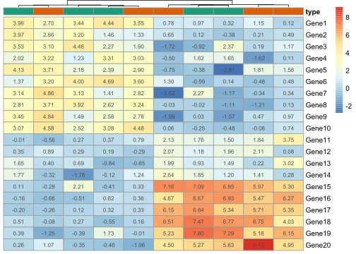
pheatmap(test, kmeans_k = 2)
#> Warning: argument `kmeans_k` is not suggested to use in pheatmap -> Heatmap
#> translation because it changes the input matrix. You might check
#> `row_km` and `column_km` arguments in Heatmap().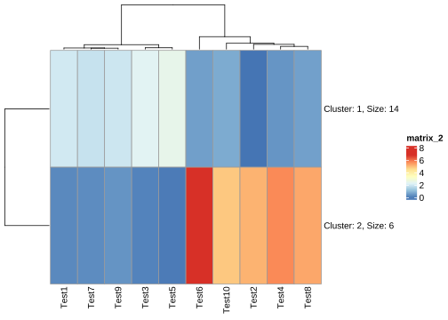
pheatmap(test, scale = "row", clustering_distance_rows = "correlation")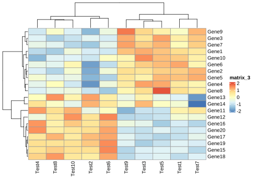
pheatmap(test, color = colorRampPalette(c("navy", "white", "firebrick3"))(50))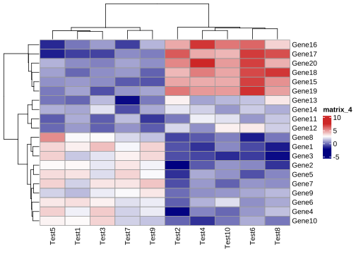
pheatmap(test, cluster_row = FALSE)pheatmap(test, legend = FALSE)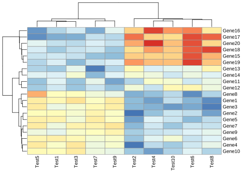
# Show text within cells
pheatmap(test, display_numbers = TRUE)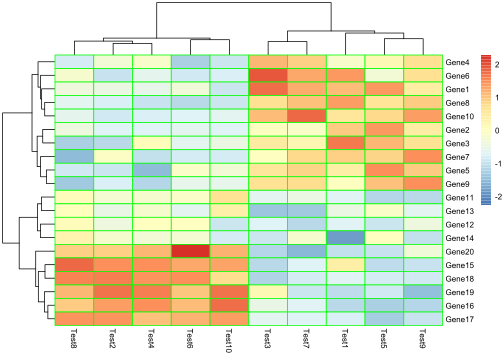
pheatmap(test, display_numbers = TRUE, number_format = "\\%.1e")
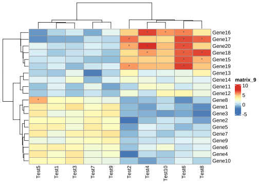
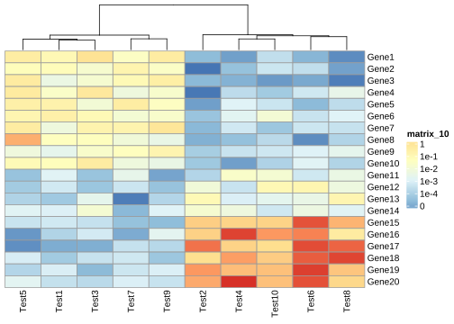
annotation_col = data.frame(type=c(rep("normal",5),rep("tumor",5)))
rownames(annotation_col) <- colnames(test)
anno_colors <- list(type=c(normal="#1b9e77",tumor="#d95f02"))
pheatmap(
test,
show_rownames = T,
show_colnames = F,
cluster_rows = F,
treeheight_col = 5,
display_numbers = T,
#gaps_col = 5,
annotation_col = annotation_col,
annotation_colors = anno_colors,
annotation_legend =F
)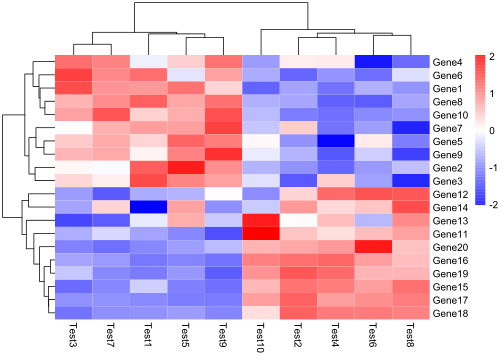
均一化z-score
pheatmap(test,scale = "column",border_color = "green",fontsize = 8)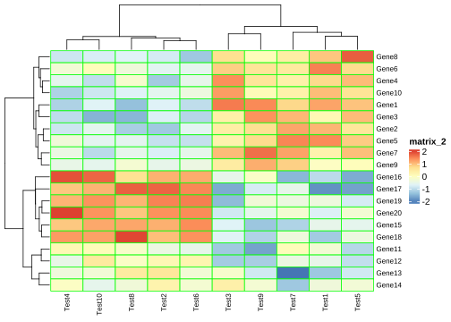
pheatmap(test,scale = "row",border_color = NA,color = colorRampPalette(c("blue","white","red"))(200))
pheatmap(test,scale = "row",border_color = NA,color = colorRampPalette(c("darkblue", "green", "yellow"))(10))
geom_tile()
# 设置随机数种子以确保结果的可重复性
set.seed(10)
# 生成随机数据集
mydata <- tibble(
year = 2000:2024,
lung = runif(25),
liver = runif(25),
bone = runif(25),
luk = runif(25),
eso = runif(25),
gas = runif(25),
eye = runif(25),
brain = runif(25),
pan = runif(25),
kidney = runif(25),
breast= runif(25),
) |> pivot_longer(cols = -1,
names_to = "cancer",
values_to = "morbidity")
ggplot(mydata, aes(year, cancer)) +
geom_tile(aes(fill =morbidity)) +
scale_fill_gradient(low = "white", high = "red")ComplexHeatmap
https://jokergoo.github.io/ComplexHeatmap-reference/book/
if(!require(ComplexHeatmap)) BiocManager::install("ComplexHeatmap")set.seed(123)
nr1 = 4; nr2 = 8; nr3 = 6; nr = nr1 + nr2 + nr3
nc1 = 6; nc2 = 8; nc3 = 10; nc = nc1 + nc2 + nc3
mat = cbind(rbind(matrix(rnorm(nr1*nc1, mean = 1, sd = 0.5), nrow = nr1),
matrix(rnorm(nr2*nc1, mean = 0, sd = 0.5), nrow = nr2),
matrix(rnorm(nr3*nc1, mean = 0, sd = 0.5), nrow = nr3)),
rbind(matrix(rnorm(nr1*nc2, mean = 0, sd = 0.5), nrow = nr1),
matrix(rnorm(nr2*nc2, mean = 1, sd = 0.5), nrow = nr2),
matrix(rnorm(nr3*nc2, mean = 0, sd = 0.5), nrow = nr3)),
rbind(matrix(rnorm(nr1*nc3, mean = 0.5, sd = 0.5), nrow = nr1),
matrix(rnorm(nr2*nc3, mean = 0.5, sd = 0.5), nrow = nr2),
matrix(rnorm(nr3*nc3, mean = 1, sd = 0.5), nrow = nr3))
)
mat = mat[sample(nr, nr), sample(nc, nc)] # random shuffle rows and columns
rownames(mat) = paste0("row", seq_len(nr))
colnames(mat) = paste0("column", seq_len(nc))Heatmap(mat)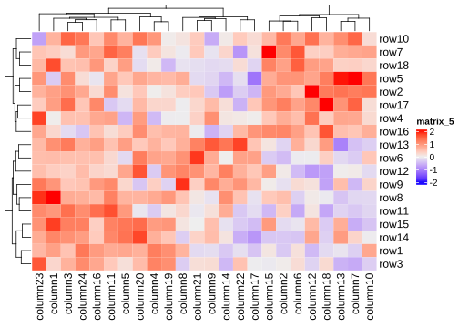
set.seed(123)
mat = matrix(rnorm(100), 10)
rownames(mat) = paste0("R", 1:10)
colnames(mat) = paste0("C", 1:10)
column_ha = HeatmapAnnotation(foo1 = runif(10), bar1 = anno_barplot(runif(10)))
row_ha = rowAnnotation(foo2 = runif(10), bar2 = anno_barplot(runif(10)))
Heatmap(mat, name = "mat", top_annotation = column_ha, right_annotation = row_ha)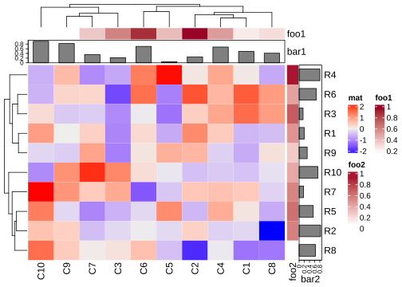